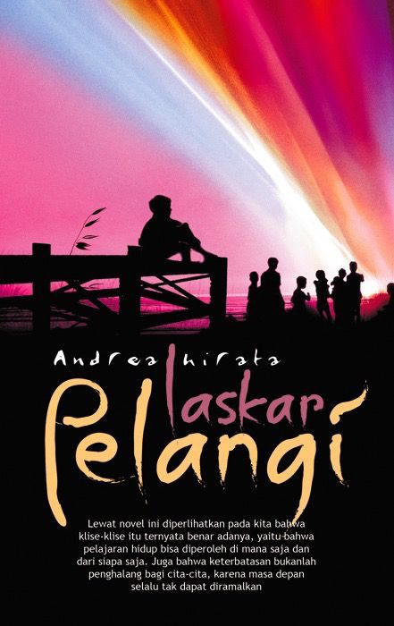
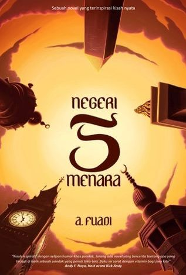

Hello,Reader!
Hello,Reader!
"Your Space, Your Literacies" — Temukan ruang membaca yang tak terbatas dalam ekosistem digital Litera Space.
📢 Berita & Pengumuman Utama
Litera Space meluncurkan 3.000 koleksi e-book eksklusif baru bidang Ilmu Informasi minggu ini.
💡 Kegiatan Terdekat
Jangan lewatkan Virtual Bedah Buku bersama jajaran dosen TI pada tanggal 20 Mei 2026 mendatang!
👥 Profil Litera Space
📜 Sejarah Berdirinya
Litera Space didirikan oleh sekelompok mahasiswa dengan visi mulia: Menciptakan wadah literasi yang inklusif, modern, dan tanpa batas ruang dan waktu.
Menjadi perpustakaan digital inovatif yang menghadirkan akses pengetahuan tanpa batas, serta menjadi ruang literasi modern yang mendukung pembelajaran dan kreativitas.
1. Menyediakan koleksi digital berkualitas.
2. Menghadirkan pengalaman membaca yang nyaman dan modern.
3. Mendukung literasi digital melalui layanan inovatif.
4. Mendorong eksplorasi pengetahuan dan kreativitas.
👔 Struktur Organisasi

🔍 Katalog Online Cerdas (OPAC)
Cari koleksi fisik maupun digital perpustakaan secara cepat:
✨ Layanan Unggulan Masa Kini
🤖 Lia AI Assistant
Lia AI: Hai Readers! 🌸 Mau rekomendasi buku atau butuh bantuan riset tugas akhir di Litera Space hari ini?
👥 Co-Reading Space
Ruang membaca bersama dan diskusi kelompok aktif.
📖 Buku Aktif Kelompok
Penulis: Ahmad Tohari
💬 Diskusi Pemustaka
Andi: Konflik batin Srintil di Bab 2 dapet banget sih emosinya.
Siti: Iya! Penggambaran Dukuh Paruk-nya detail banget.
🔄 Layanan Sirkulasi Mandiri
📝 Isi Data Peminjaman
📊 Riwayat Transaksi
Belum ada transaksi sirkulasi hari ini.
📚 Repositori & Koleksi Litera Space
Jelajahi berbagai format pustaka. Buku berlabel 🟢 Bisa Dibaca tersedia teks penuh. Buku berlabel 🟡 Ringkasan ditampilkan sinopsis dan rangkuman per bab.
Koleksi Buku Fisik (15 Judul)

Laut Bercerita
Leila S. Chudori
🟢 Tersedia di Rak S-1

Rumah Untuk Alie
Lenn Liu
🟢 Tersedia di Rak S-4

Manajemen Sumber Informasi dan Perpustakaan
Drs. Hartono, S.S., M.Hum.
🟢 Tersedia di Rak S-3

Sapiens: Riwayat Singkat Umat Manusia
Yuval Noah Harari
🟢 Tersedia di Rak S-2

Atomic Habits
James Clear
🟢 Tersedia di Rak S-5

Laskar Pelangi
Andrea Hirata
🟢 Tersedia di Rak S-1

Thinking, Fast and Slow
Daniel Kahneman
🟢 Tersedia di Rak S-6

Pulang
Tere Liye
🟢 Tersedia di Rak S-2
Pengantar Ilmu Perpustakaan
Sulistyo-Basuki
🟢 Tersedia di Rak S-3

The Alchemist
Paulo Coelho
🟡 1 Eks Tersisa — Rak S-4

Rich Dad Poor Dad
Robert T. Kiyosaki
🟢 Tersedia di Rak S-7
Metodologi Penelitian Kualitatif
Prof. Dr. Sugiyono
🟢 Tersedia di Rak R-1

Filosofi Teras
Henry Manampiring
🟢 Tersedia di Rak S-5

The Psychology of Money
Morgan Housel
🟢 Tersedia di Rak S-7

Bumi Manusia
Pramoedya Ananta Toer
🟢 Tersedia di Rak S-1
Koleksi Digital (Audio, Video & Manuskrip) — 6 Judul
Video Tutorial Olah Arsip Aktif
Biro Umum ATR/BPN
🟢 Streaming Tersedia

Manuskrip Sureq Galigo
Colliq Pujie (abad ke-19)
🟢 Domain Publik
Podcast Literasi: Membaca di Era Digital
Tim Litera Space
🟢 Streaming Tersedia
Webinar: Katalogisasi Bahan Pustaka Modern
Perpustakaan Nasional RI
🟢 Rekaman Tersedia
Peta Aksara Nusantara Interaktif
Pusat Bahasa Kemdikbud
🟢 Interaktif Online
Dokumenter: Sejarah Percetakan di Indonesia
Arsip Nasional RI
🟢 Domain Publik
Koleksi Buku Elektronik (E-Book) — 8 Judul
ℹ️ Catatan: Buku-buku berhak cipta ditampilkan sinopsis lengkap + panduan bab. Untuk membaca teks penuh, gunakan layanan resmi seperti iPusnas, Google Play Books, atau Gramedia Digital.

Re: dan perempuan
Maman Suherman
🟡 Sinopsis Lengkap

Ronggeng Dukuh Paruk
Ahmad Tohari
🟡 Sinopsis Lengkap

As Long As the Lemon Trees Grow
Zoulfa Katouh
🟡 Sinopsis Lengkap

Bumi
Tere Liye
🟡 Sinopsis Lengkap

Perahu Kertas
Dee Lestari
🟡 Sinopsis Lengkap

Negeri 5 Menara
Ahmad Fuadi
🟡 Sinopsis Lengkap

The Kite Runner
Khaled Hosseini
🟡 Sinopsis Lengkap

Cantik Itu Luka
Eka Kurniawan
🟡 Sinopsis Lengkap
Jurnal Ilmiah Berkala — 6 Judul

Identitas Nasional ditinjau dari UUD 1945 dan UU No. 24 Tahun 2009
Tatu Afifah — Ajudikasi: Jurnal Ilmu Hukum
🟢 Open Access
Literasi Digital Generasi Z di Era Post-Pandemi
Dewi Rahmawati — Jurnal Ilmu Perpustakaan dan Informasi
🟢 Open Access
Pemanfaatan Kecerdasan Buatan dalam Pengelolaan Perpustakaan Digital
Budi Santoso — Berkala Ilmu Perpustakaan dan Informasi
🟢 Open Access
Green Library: Konsep Perpustakaan Berkelanjutan di Indonesia
Rini Kurniasih — Jurnal Pustaka Ilmu
🟢 Open Access
Analisis Kebutuhan Informasi Mahasiswa Tingkat Akhir
Hendra Wijaya — Jurnal Akses: Pengabdian Masyarakat
🟢 Open Access
Minat Baca Masyarakat Indonesia: Studi Komparatif 2015–2025
Sri Wahyuni — Jurnal Perpustakaan Indonesia
🟢 Open Access
Repositori Skripsi & Tugas Akhir — 5 Judul

Analisa Manual Handling dengan Metode REBA di PT Arnott's Indonesia
Eko Sarwiyadi — Teknik Industri
🟢 Repositori Terbuka
Implementasi Sistem Informasi Perpustakaan Berbasis Web di SMA Negeri 1 Semarang
Anisa Putri Rahayu — Ilmu Perpustakaan
🟢 Repositori Terbuka
Pengaruh Promosi Perpustakaan melalui Media Sosial terhadap Kunjungan Pemustaka
Muhammad Fajar — Ilmu Perpustakaan dan Informasi
🟢 Repositori Terbuka
Analisis Efisiensi Energi pada Gedung Perpustakaan Universitas dengan Pendekatan Green Building
Diah Kusumawati — Teknik Arsitektur
🟢 Repositori Terbuka
Perilaku Pencarian Informasi Mahasiswa Program Studi Ilmu Perpustakaan Undip
Rizky Amalia — Ilmu Perpustakaan
🟢 Repositori Terbuka
❓ Panduan Lengkap & FAQ
💡 Cara Memakai Sistem OPAC
Selamat datang di OPAC LiteraSpace! Temukan buku favoritmu dengan mudah:
1. Cari Buku Kesayanganmu 🔍
Ketik judul buku, nama penulis, subjek, atau kata kunci pada kolom pencarian.
2. Gunakan Filter Pencarian 🎀
Persempit hasil berdasarkan kategori, tahun terbit, penulis, atau ketersediaan buku.
3. Klik Detail Buku 📖
Lihat informasi lengkap: judul, penulis, tahun terbit, lokasi rak, status ketersediaan.
4. Reservasi Buku ✨
Klik tombol "Pinjam Sekarang" atau "Reservasi".
5. Cek Status Peminjaman 💌
Pantau status pinjaman dan tanggal jatuh tempo melalui akun pribadimu.
📌 Syarat Pinjam Koleksi
🌷 Akun LiteraSpace aktif wajib dimiliki
🌷 Login dahulu sebelum meminjam
🌷 Maksimal 3 buku sekaligus
💗 Masa peminjaman 7 hari, bisa diperpanjang 1 kali
🎀 Keterlambatan → pembatasan akun sementara
❓ Apa itu Fitur L.Charity?
L.Charity adalah layanan sosial di mana akumulasi halaman digital yang kamu selesaikan dihitung untuk mendonasikan buku fisik ke sekolah terpencil.
📅 Agenda & Pengumuman
✅ BERHASIL TERLAKSANA
Workshop Penulisan Jurnal Ilmiah (10 Mei 2026): Sukses diikuti 500+ peserta. Materi PDF tersedia di menu Koleksi.
Litera Space Festival 2026 (1–3 Mei 2026): Dihadiri 1.200+ peserta. Pemenang Lomba Resensi Buku Nasional telah diumumkan.
L.Charity: 200 Buku Terdonasikan ke Sekolah Pelosok.
📅 AGENDA MENDATANG
Bedah Buku "Ronggeng Dukuh Paruk": Diskusi makna sosial dan sejarah bersama civitas akademika.
Workshop Menulis Karya Ilmiah: Teknik sitasi APA/MLA untuk skripsi dan jurnal.
Pelatihan Literasi Digital: Cara membedakan berita hoaks vs sumber terpercaya.
Kontak Kami
Hubungi Pustakawan
Kami siap membantu kendala akses, pertanyaan sirkulasi, atau bantuan referensi.
📍 Alamat: XC3H+CH8, Jl. Bukit Sari Raya, Sumurboto, Banyumanik, Semarang
📞 Telepon: 086788999123
✉️ Email: pustakawan@literaspace.id
🕐 Jam Layanan: Senin–Kamis & Minggu (24 jam)